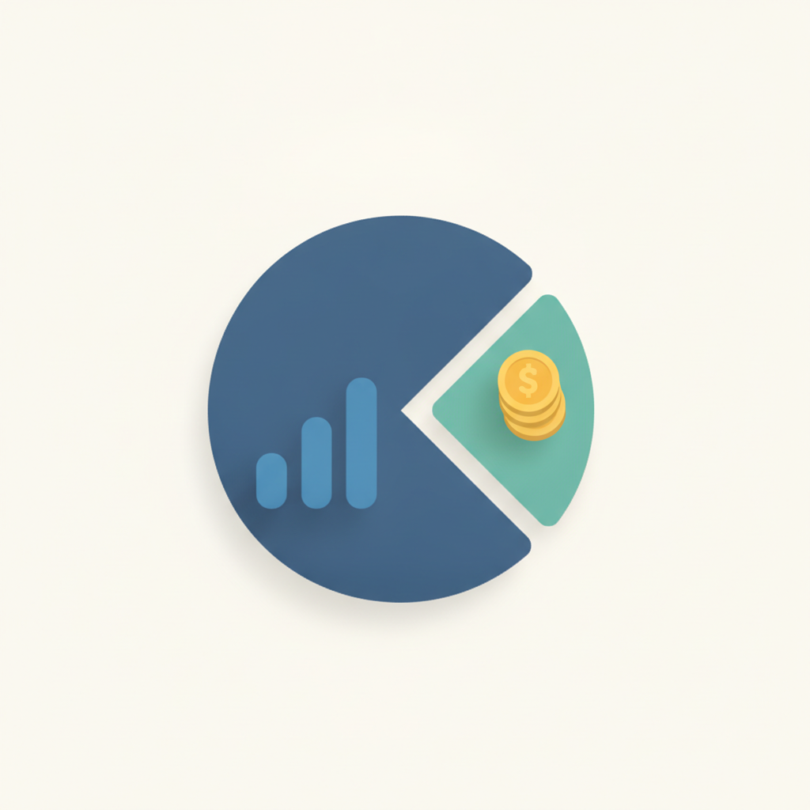
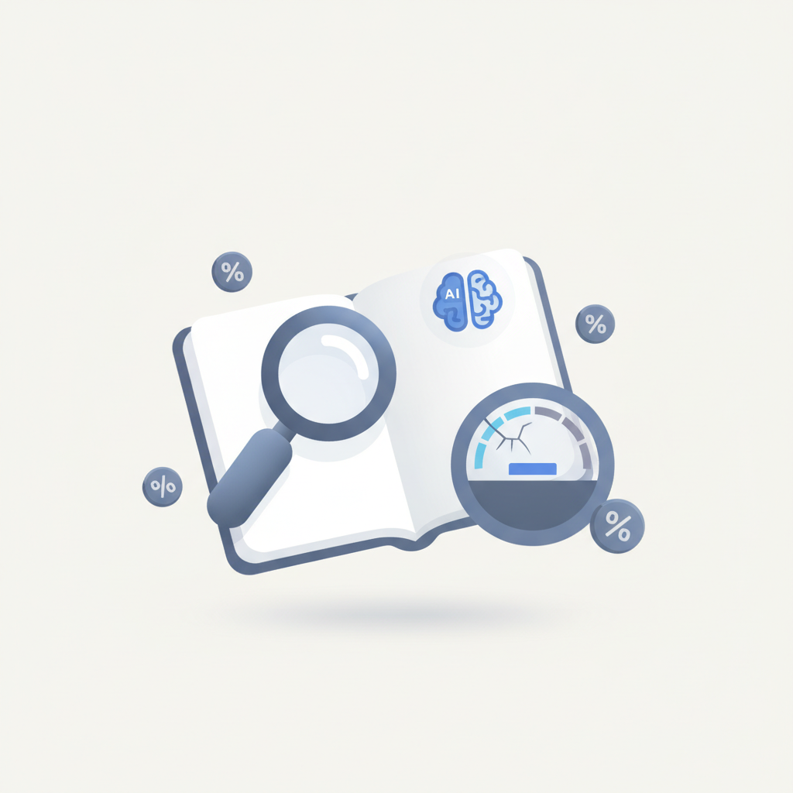
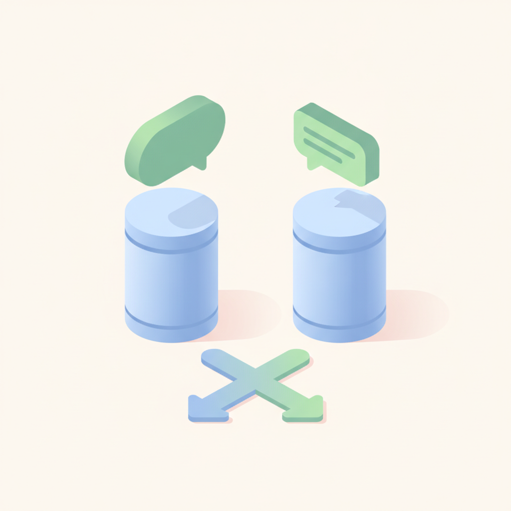
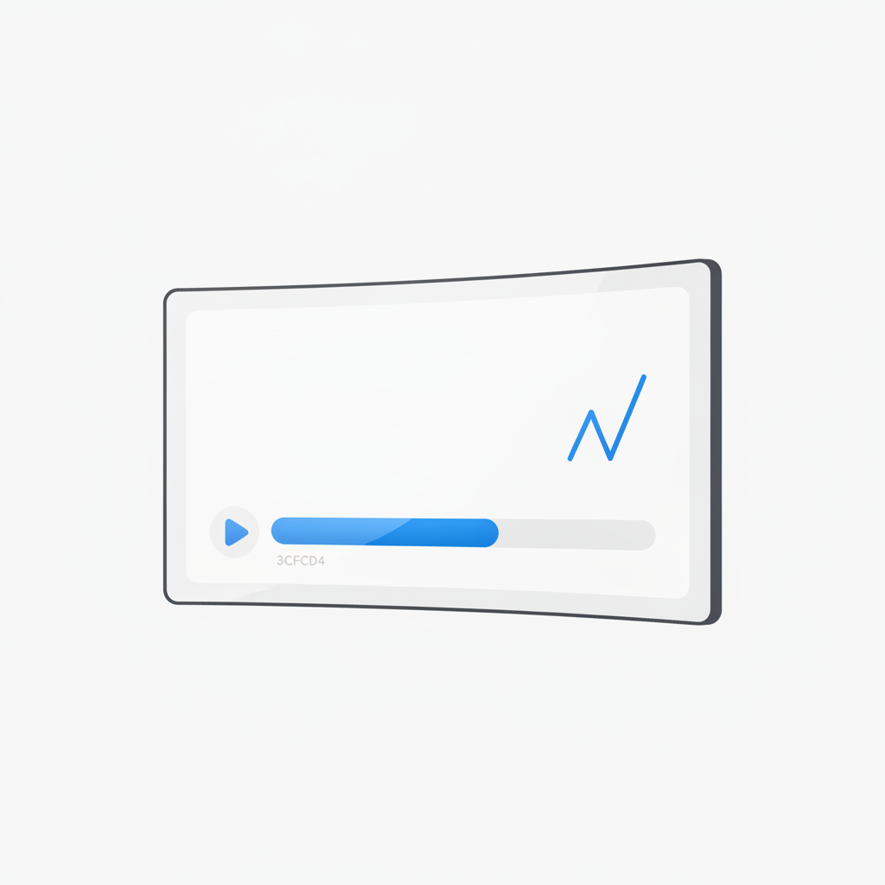
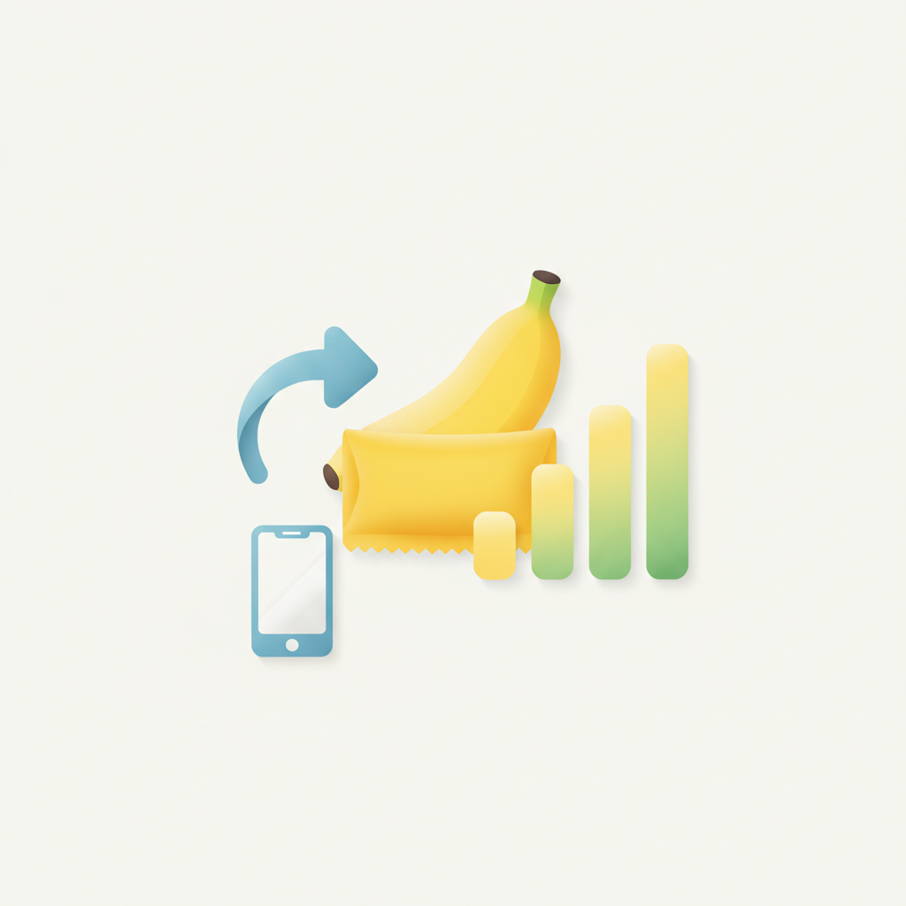
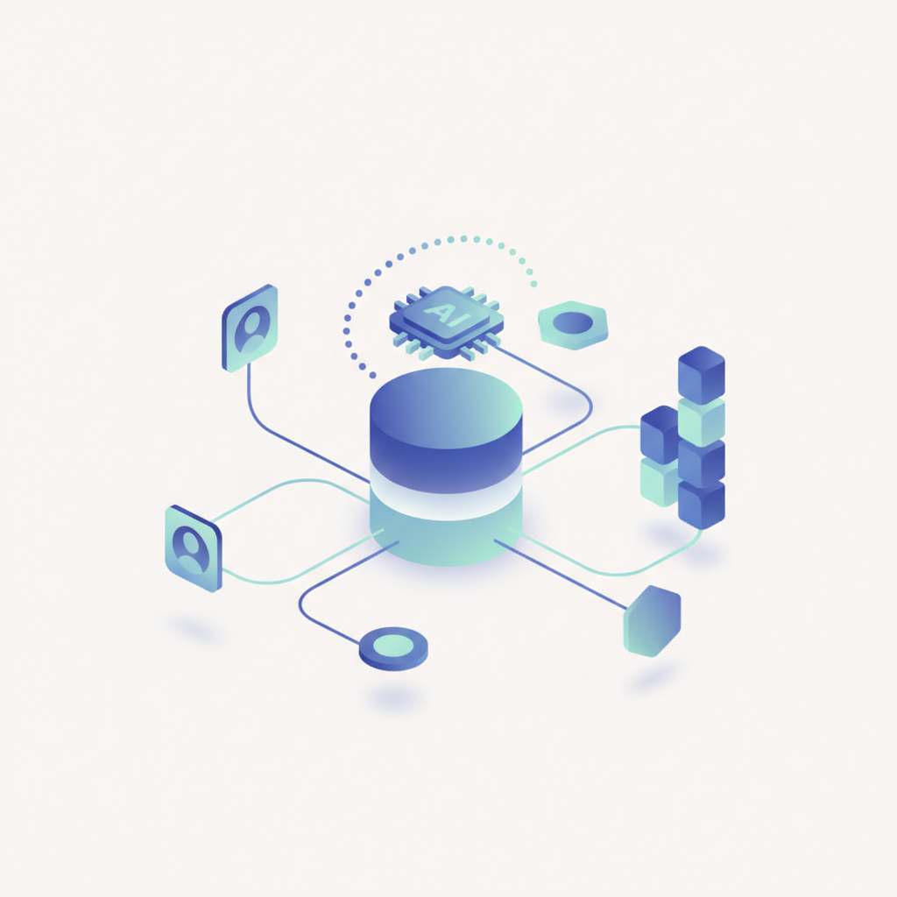

안녕하세요! 수요일 마케팅 소식 전해드립니다 😊 오늘은 농심 바나나킥 사례가 특히 인상적입니다. 검색량을 최대 325% 끌어올린 건 별도의 광고비가 아니라, 소비자가 먼저 만들어 올린 영상에 브랜드가 직접 '답장'을 보내는 방식이었습니다. UGC에 반응하는 브랜드의 태도 자체가 콘텐츠가 된 셈인데, 소비자의 언어로 대화하는 것이 어떤 캠페인보다 강한 파급력을 만들 수 있다는 걸 숫자로 확인하게 됩니다.
빌더조쉬에서 다룬 티로의 '온톨로지' 이야기도 오늘 함께 읽어볼 만합니다. 연매출 40억 스타트업이 AI 도입보다 먼저 챙긴 건 AI와 팀원이 같은 기준으로 일할 수 있도록 개념과 판단 체계를 먼저 정리하는 일이었습니다. 도구를 도입하기 전에 조직이 공유하는 언어와 기준을 먼저 설계한다는 발상은, AI를 실무에 연결하려는 팀이라면 한 번쯤 되짚어볼 질문을 던집니다. 우리 팀은 지금 같은 기준으로 일하고 있는가.
한 주의 중반, 오늘도 좋은 인사이트로 힘차게 하루를 시작하세요! 💡
메타가 기존 팔로워를 넘어 구매 의향이 높은 사용자에게 라이브 방송을 노출하는 인스타그램 '라이브 방송 광고'를 30일 한국에 정식 출시했다. 라이브 방송이 일상적인 쇼핑 창구로 자리 잡는 가운데, 소비자가 제품을 발견하고 구매하기까지의 과정을 하나로 연결하는 메타의 쇼핑 생태계가 한층 강화된다. 라이브 커머스를 운영하는 브랜드라면 팔로워 외 신규 잠재고객까지 도달 범위를 넓히는 수단으로 적극 검토할 필요가 있다.
›
2메트리쿨의 '소셜 애즈 리포트 2026'에 따르면 조사 대상 광고주의 91%가 메타에서만 유료 소셜미디어 광고를 집행한 것으로 나타났다. 틱톡만 이용한 광고주는 5%에 그쳤지만, 광고 노출·웹사이트 방문·잠재고객 확보에 드는 비용은 메타보다 낮았다. 예산 효율을 높이려는 마케터라면 틱톡을 보조 채널로 병행 운용하는 전략을 검토할 만하다.
›
3브래프턴 백서에 따르면 마케터 64%가 챗GPT·구글 AI 오버뷰 등 AI 검색 확산에 맞춰 전략을 바꿨지만, 생성형 엔진 최적화(GEO)를 '매우 잘 안다'는 응답자는 9%에 불과했다. 별도 예산이나 사내 교육 없이 스스로 대응법을 찾는 경우가 많았고, AI 검색이 방문·구매에 미치는 영향을 측정하기 어렵다는 점이 가장 큰 고민으로 꼽혔다. GEO 역량 내재화와 성과 측정 체계 구축이 마케터의 시급한 과제로 부상하고 있다.
›
4'프로틴'으로 질문하면 매일유업 셀렉스·일동후디스 하이뮨이, '단백질보충제'로 질문하면 뉴트리션팩토리·지웨이 같은 헬스 전문 브랜드가 AI 추천 상위에 오르는 것으로 나타났다. 사실상 같은 제품임에도 검색어에 따라 노출 브랜드 집합 자체가 달라진다는 의미다. 브랜드가 AI 노출을 점검할 때 대표 키워드 하나만 확인해서는 실제 노출 현황을 파악하기 어렵다는 점을 시사한다.
›
5유튜브가 영상 재생 첫 순간부터 조회수를 집계하면서 홈 화면 자동재생분까지 공개 조회수에 포함되기 시작했다. 크리에이터 광고 플랫폼 에이전티오가 7만5000개 이상 영상을 분석한 결과, 공개 조회수 중 이용자가 실제로 시청을 이어간 '참여 조회수' 비율은 평균 60%였다. 유튜브 크리에이터 광고 성과를 측정할 때 공개 조회수만 보지 않고 참여 조회수를 기준 지표로 삼아야 한다는 점을 유의해야 한다.
›
6농심 바나나킥의 검색량을 최대 325% 끌어올린 것은 광고비가 아니라 소비자 영상에 브랜드가 보낸 '답장'이었다. UGC(사용자 생성 콘텐츠)를 단순히 발견하는 데 그치지 않고 브랜드가 능동적으로 반응할 때 비로소 마케팅 자산으로 전환된다는 사례다. 예산 없이도 소비자 접점을 확장할 수 있는 UGC 활용 전략으로, 담당 마케터라면 반응 체계와 성과 측정 방법을 함께 갖춰야 한다.
›
7고객데이터플랫폼(CDP) 시장이 데이터를 모으는 역할을 넘어 AI가 고객 상황을 실시간으로 파악하고 다음 행동까지 결정하는 방향으로 빠르게 진화하고 있다. 개인정보 보호 강화와 기업 데이터웨어하우스 활용 확대도 시장 변화를 가속하는 요인으로 꼽힌다. CDP 시장은 2030년 371억달러 규모로 성장할 것으로 전망되며, 마케터는 AI 기반 CDP 도입을 통한 초개인화 전략 고도화를 검토할 시점이다.
›여울·현제 인터뷰: AI와 팀원이 같은 기준으로 일하는 법
브랜드 진단부터 지금 당장 해야 할 우선순위까지,
30분 무료 상담에서 함께 정리해드려요.
이미 수십 개 브랜드가 상담받았습니다.
내 브랜드처럼, 함께 고민하는 팀원의 마음으로 봅니다.
스타트업 대표·마케팅 담당자를 위한 30분